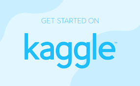

                                                                                                                                                                                                                                                                                                                  <!DOCTYPE html>
<<!DOCTYPE html>
<html lang="en">
<head>
  <meta charset="UTF-8">
  <meta name="viewport" content="width=device-width, initial-scale=1.0">
  <title>Anveshika</title>

  <!-- Google Fonts -->
  <link href="https://fonts.googleapis.com/css2?family=Orbitron:wght@500;700&family=Poppins:wght@300;400;500;600&display=swap" rel="stylesheet">

  <!-- CSS Files -->
  <link rel="stylesheet" href="article.css">
  <link rel="stylesheet" href="nw.css">
</head>

<body>

<header class="navbar">
  <div class="logo">ANVESHIKA</div>
  <nav class="nav-links">
    <a href="index.html">Home</a>
    <a href="about.html">About</a>
  </nav>
</header>

<main class="article-page">

  <!-- ================= NVIDIA ================= -->
  <section class="article-top">
    <div class="article-image">
      
    </div>

    <div class="article-intro">
      <p class="article-category">ONLINE RESOURCES • NVIDIA</p>

      <h1 class="article-title">
        Big Data Will Replace the Need for Theory?
      </h1>

      <p class="article-summary">
        Big data does not replace theory, but it strongly supports practical learning in data science. Platforms like Kaggle, Great Learning, and Intellipaat offer courses in Python, machine learning, and data visualization. Tools such as Google Colab allow cloud-based coding practice, while real-world datasets help learners build industry-ready skills.
        <br><br>
        NVIDIA provides free AI learning resources through its Deep Learning Institute (DLI), offering hands-on GPU labs. Developers can access tools like CUDA, RAPIDS, TensorFlow, PyTorch, and TensorRT. Webinars and GTC sessions further help learners understand real-world AI applications.
      </p>
    </div>
  </section>


  <!-- ================= KAGGLE ================= -->
  <section class="article-top">
    <div class="article-image">
      
    </div>

    <div class="article-intro">
      <p class="article-category">ONLINE RESOURCES • KAGGLE</p>

      <h1 class="article-title">
        We Need to Bring Learning to People Instead of People to Learning
      </h1>

      <p class="article-summary">
        Kaggle is a free platform for learning and practicing data science and AI. It offers beginner-friendly micro-courses through Kaggle Learn, covering Python, SQL, visualization, and machine learning. Users can work in Kaggle Notebooks without installation.
        <br><br>
        Kaggle provides thousands of real-world datasets and hosts competitions that allow learners to solve practical problems and learn from top data scientists.
      </p>
    </div>
  </section>


  <!-- ================= MICROSOFT ================= -->
  <section class="article-top">
    <div class="article-image">
      
    </div>

    <div class="article-intro">
      <p class="article-category">ONLINE RESOURCES • MICROSOFT</p>

      <h1 class="article-title">
        Microsoft Learn: Turn Curiosity into Digital Capability
      </h1>

      <p class="article-summary">
        Microsoft Learn offers free structured modules, hands-on labs, and digital badges. Learners can practice using Azure Machine Learning, Power BI, and Azure Data Factory in sandbox environments.
        <br><br>
        Microsoft also provides documentation and cloud-based tools to build, test, and deploy AI models in real-world scenarios.
      </p>
    </div>
  </section>

</main>

</body>
</html>